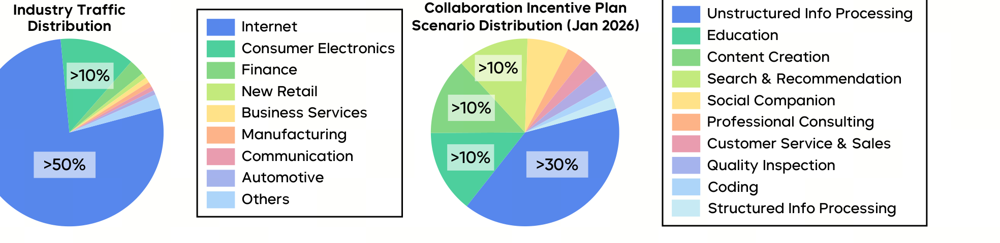

Seed2.0 是字节跳动 Seed 团队的旗舰通用大模型系列（Pro / Lite / Mini）。它不追求只在竞赛题上刷分，而是把目标定在「真实世界复杂性」——服务于已覆盖数亿日活的产品生态（豆包、Trae 等）。
这是一份偏「能力 + 评测」的官方模型卡：它不公开架构与训练细节，而是先从真实用户需求出发抽象出一套四维评测框架（科学发现 / Vibe Coding / 上下文学习 / 真实世界任务），再用它来衡量与迭代模型。
结论：在数学、推理、视觉、搜索等核心能力上已进入国际第一梯队（AIME 2025 98.3、Codeforces Elo 3020、HMMT 97.3），API 价格比前沿模型低约一个数量级；但模型卡也诚实承认在代码工程（SWE-Evo、NL2Repo）与长尾知识（SimpleQA-Verified）上与 Claude / Gemini 仍有差距。
当前 LLM 出现了一个有趣的不对称：能解奥赛级难题，却常常无法端到端可靠地完成一件实际任务（比如一次性搭出一个设计良好的应用）。
模型卡指出造成这一落差的两个原因：
因此 Seed2.0 的设计直接对齐四个最影响真实交互质量的因素：
模型卡难得地公开了一份「中国大陆 MaaS 使用分布」，这正是 Seed2.0 设计取舍的依据——先看清楚用户在用模型干什么。

在智能体编码（agentic coding）的轨迹数据里也有清晰画像：前端开发（页面布局、样式、UI 逻辑）的请求远超后端 / 客户端 / 全栈；框架上 Vue.js 的采用率是 React 的三倍多（反映中国大陆开发者生态）；按任务类型看，Bug 修复居首，其次是重构与文档——开发者主要把 AI 用于「反应式维护」，而非从零开发。
Seed2.0 最有意思的「方法论」不是某个网络结构，而是把评测本身当作开发的指南针。团队建立了一套四维框架，既是 benchmark 套件，也是迭代开发的导引。
这套框架的设计哲学贯穿全卡：
为了让 agentic 评测稳定可复现，团队做了不少「脏活」：统一执行环境到预构建镜像、修复退化或报错的参考脚本、用内部镜像替换外部包源；并做质量过滤剔除不可靠用例（多容器 Docker Compose、参考解自身都过不了的用例、跨次运行非确定性的用例、异常占盘 / 依赖网络的任务等）。为避免低估竞品，最终分数取「官方文档分」与「自测分」的最大值。
在基础语言能力上，Seed2.0 Pro「舒适地处于国际领先集团之中」。下面挑出最能说明问题的数字（完整对比见原文 Table 3）。点击切换不同能力维度。
| 基准 | GPT-5.2 High | Gemini-3-Pro | Claude-Opus-4.5 | Seed2.0 Pro |
|---|---|---|---|---|
| AIME 2025 | 99.0 | 95.0 | 91.3 | 98.3 |
| HMMT Feb 2025 | 100.0 | 97.3 | 92.9 | 97.3 |
| BeyondAIME | 86.0 | 83.0 | 69.0 | 86.5 |
| IMOAnswerBench（无工具） | 86.6 | 83.3 | 72.6 | 89.3 |
| MathArenaApex（shortlist） | 80.1 | 71.4 | 47.4 | 82.1 |
| 基准 | GPT-5.2 High | Gemini-3-Pro | Claude-Opus-4.5 | Seed2.0 Pro |
|---|---|---|---|---|
| Codeforces Elo（无工具） | 3148 | 2726 | 1701 | 3020 |
| LiveCodeBench (v6) | 87.7 | 90.7 | 84.8 | 87.8 |
| AetherCode | 73.8 | 57.8 | 31.6 | 60.6 |
| 基准 | GPT-5.2 High | Gemini-3-Pro | Claude-Opus-4.5 | Seed2.0 Pro |
|---|---|---|---|---|
| MMLU-Pro | 85.9 | 90.1 | 89.3 | 87.0 |
| Encyclo-K（长尾专业知识） | 61.0 | 64.9 | 63.3 | 65.7 |
| SuperGPQA | 67.9 | 73.8 | 70.6 | 68.7 |
| HealthBench | 63.3 | 37.9 | 36.3 | 57.7 |
| SimpleQA Verified | 36.8 | 72.1 | 48.6 | 36.0 |
| 基准 | GPT-5.2 High | Gemini-3-Pro | Claude-Opus-4.5 | Seed2.0 Pro |
|---|---|---|---|---|
| GPQA Diamond | 92.4 | 91.9 | 86.9 | 88.9 |
| PhyBench | 74.0 | 80.0 | 69.0 | 74.0 |
| FrontierSci-research | 25.0 | 15.0 | 21.7 | 25.0 |
模型卡展示了几个超出「答题」范畴的能力切片：
Seed2.0 的一大卖点是成本结构。在能力对标前沿模型的同时，token 定价大约低一个数量级——这对高频、工作流集成的企业 MaaS 部署尤其关键。
| 模型 | 输入 / 1M tokens | 输出 / 1M tokens |
|---|---|---|
| Claude-Opus-4.5-thinking | $5.00 | $25.00 |
| GPT-5.2 High | $1.75 | $14.00 |
| Gemini-3-Pro | $2.00–4.00 | $12.00–18.00 |
| Seed2.0 Pro | $0.47 | $2.37 |
| Seed2.0 Lite | $0.09 | $0.53 |
| Seed2.0 Mini | $0.03 | $0.31 |
三档定位各司其职：
面向能力至上的复杂推理、长上下文任务，是与国际前沿对标的主力型号（调用 ID Doubao-Seed-2.0-pro）。
在效率型模型中表现稳健：多个真实世界 ToB 基准成绩强，部分高级任务上直接超过 GPT-5-Mini，同时延迟与成本更友好。
输出价低于 $0.50/1M tokens，为「每次查询成本必须极低」的高吞吐、延迟敏感场景打开了可能性。
模型卡难得地直接列出了自己与国际前沿的差距——这往往比漂亮的数字更能帮你判断它适不适合你的场景。
SWE-Evo 与 NL2Repo。SuperGPQA 与 SimpleQA-Verified。DeR2 Bench 与 NL2Repo-Bench 上落后最强基线，说明长程上下文整合与仓库级代码生成仍是挑战——团队已将其列为优先研究方向。Seed2.0 系列在「解决复杂真实世界任务」这条路上迈出了关键一步：先从用户真实需求出发建立可靠且前瞻的评测体系，再据此聚焦攻克长尾知识与复杂指令跟随问题，从而提升模型在复杂、长程真实任务上的可靠性。叠加世界领先的推理、视觉理解与搜索能力，它满足了海量用户最真实的需求；模型卡用大量真实用例证明——Seed2.0 已初步具备处理复杂真实世界任务的能力。
体验入口：火山引擎方舟 ↗ · 官方页面：seed.bytedance.com/zh/seed2 ↗